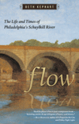

|
The Archival Turn in Feminism
Outrage in Order
Eichhorn, Kate
A window into the preservation of contemporary feminist documents and artifacts and how this archival activism has advanced intergenerational political alliances
New in Paperback!
208 pp • 5.5x8.5 • Fall 2014
paper 978-1-43990-952-2
|
|
Bullying
The Social Destruction of Self
Martocci, Laura
Offering a new understanding of bullying, linking it with insights into the construction of identity
220 pp • 6x9 • Fall 2014
paper 978-1-43991-073-3
cloth 978-1-43991-072-6 |
|
Dancing the Fairy Tale
Producing and Performing The Sleeping Beauty
Katz Rizzo, Laura
The Sleeping Beauty and the story of ballet in Pennsylvania
194 pp • 5.5x8.25 • Fall 2014
paper 978-1-43991-122-8
cloth 978-1-43991-121-1
|
 |
Flow
The Life and Times of Philadelphia's Schuylkill River
Kephart, Beth
An autobiography of the Schuylkill, and a meditation on the river's impact on Philadelphia's history, people, and environment
New in Paperback!
120 pp • 5.5x8.5 • Fall 2014
paper 978-1-59213-637-7 |
|
The Forest and the Trees
Sociology as Life, Practice, and Promise
Third Edition
Johnson, Allan G.
An updated exploration of sociology as a way of thinking
198 pp • 6x9 • Fall 2014
paper 978-1-43991-187-7
cloth 978-1-43991-186-0 |
|
The Gender Knot
Unraveling Our Patriarchal Legacy
Third Edition
Johnson, Allan G.
A compelling approach to gender inequality that empowers both men and women to be part of the solution instead of just part of the problem
322 pp • 6x9 • Fall 2014
paper 978-1-43991-184-6
cloth 978-1-43991-183-9 |
|
Greening Africana Studies
Linking Environmental Studies with Transforming Black Experiences
Patterson, Rubin
Establishes the need to include environmental studies as part of the Africana studies curriculum
258 pp • 5.5x8.25 • Fall 2014
paper 978-1-43990-872-3
cloth 978-1-43990-871-6 |
|
"I Hear America Singing"
Folk Music and National Identity
Donaldson, Rachel Clare
How the folk music revival gave voice to ideas about the essence of American character and values
234 pp • 6x9 • Fall 2014
paper 978-1-43991-079-5
cloth 978-1-43991-078-8 |
|
Movements in Times of Democratic Transition
edited by Klandermans, Bert and Cornelis van Stralen
How do social movements that trigger democratic movements survive their own success?
382 pp • 6x9 • Fall 2014
paper 978-1-43991-181-5
cloth 978-1-43991-180-8 |
|
Music and Social Change in South Africa
Maskanda Past and Present
Olsen, Kathryn
A comprehensive analysis of maskanda, a Zulu musical practice, in the context of political, cultural, and historical transformation in South Africa
222 pp • 6x9 • Fall 2014
cloth 978-1-43991-136-5 |
|
Navigating Gendered Terrain
Stereotypes and Strategy in Political Campaigns
Dittmar, Kelly
Explores how candidates and campaign professionals navigate the gendered terrain of political campaigns
230 pp • 6x9 • Fall 2014
paper 978-1-43991-149-5
cloth 978-1-43991-148-8
|
|
The New Eagles Encyclopedia
Didinger, Ray, with Robert S. Lyons
The best-selling book on the Philadelphia Eagles, completely updated and expanded
440 pp • 8.3125x10.875 • Fall 2014
cloth 978-1-43991-211-9 |

|
The Outsider
Albert M. Greenfield and the Fall of the Protestant Establishment
Rottenberg, Dan
The remarkable life of Albert M. Greenfield, a Jewish immigrant whose business empire helped shape Philadelphia and the United States in the twentieth century
384 pp • 6x9 • Fall 2014
cloth 978-1-4399-0841-9 |

|
Red War on the Family
Sex, Gender, and Americanism in the First Red Scare
Ryan, Erica J.
How the Red Scare contributed to sexual conformity in the United States
232 pp • 6x9 • Fall 2014
cloth 978-1-43990-884-6 |

|
Reimagining Courts
A Design for the Twenty-First Century
Flango, Victor E. and Thomas M. Clarke
Promotes practical reform ideas to make courts more effective, more efficient, and more customer friendly
214 pp • 5.5x8.25 • Fall 2014
cloth 978-1-43991-167-9 |

|
Self-Determination without Nationalism
A Theory of Postnational Sovereignty
Dahbour, Omar
Advocating the new concept of "ecosovereignty," based on a reformulation of political self-determination
New in Paperback!
272 pp • 6x9 • Fall 2014
paper 978-1-43990-075-8 |
|
Senior Power or Senior Peril
Aged Communities and American Society in the Twenty-First Century
Bramlett, Brittany H.
Shows how the increasing number of aged communities in the United States shapes the local political context for residents of all ages
168 pp • 5.5x8.25 • Fall 2014
paper 978-1-43991-134-1
cloth 978-1-43991-133-4 |
|
Tensions in the American Dream
Rhetoric, Reverie, or Reality
Bush, Melanie E. L. and Roderick D. Bush
The contradictions of the promise — and reality — of the American Dream
258 pp • 6x9 • Fall 2014
paper 978-1-59213-838-8
cloth 978-1-59213-837-1 |

|
Unbought and Unbossed
Transgressive Black Women, Sexuality, and Representation
Melancon, Trimiko
How do fictional representations of transgressive black women in the post-civil rights era expand our understanding of race and black womanhood?
256 pp • 5.5x8.5 • Fall 2014
paper 978-1-4399-1091-7
cloth 978-1-43991-145-7 |

|
Upon the Ruins of Liberty
Slavery, the President's House at Independence National Historical Park, and Public Memory
Aden, Roger C.
A behind-the-scenes look at the development of the memorial to slavery in Independence Mall
256 pp • 6x9 • Fall 2014
cloth 978-1-43991-199-0 |

|
Women in Politics in the American City
Holman, Mirya R.
How and why gender matters in framing and determining urban policy and politics
212 pp • 5.5x8.25 • Fall 2014
cloth 978-1-43991-170-9 |
Click here
to download the catalog (pdf). |